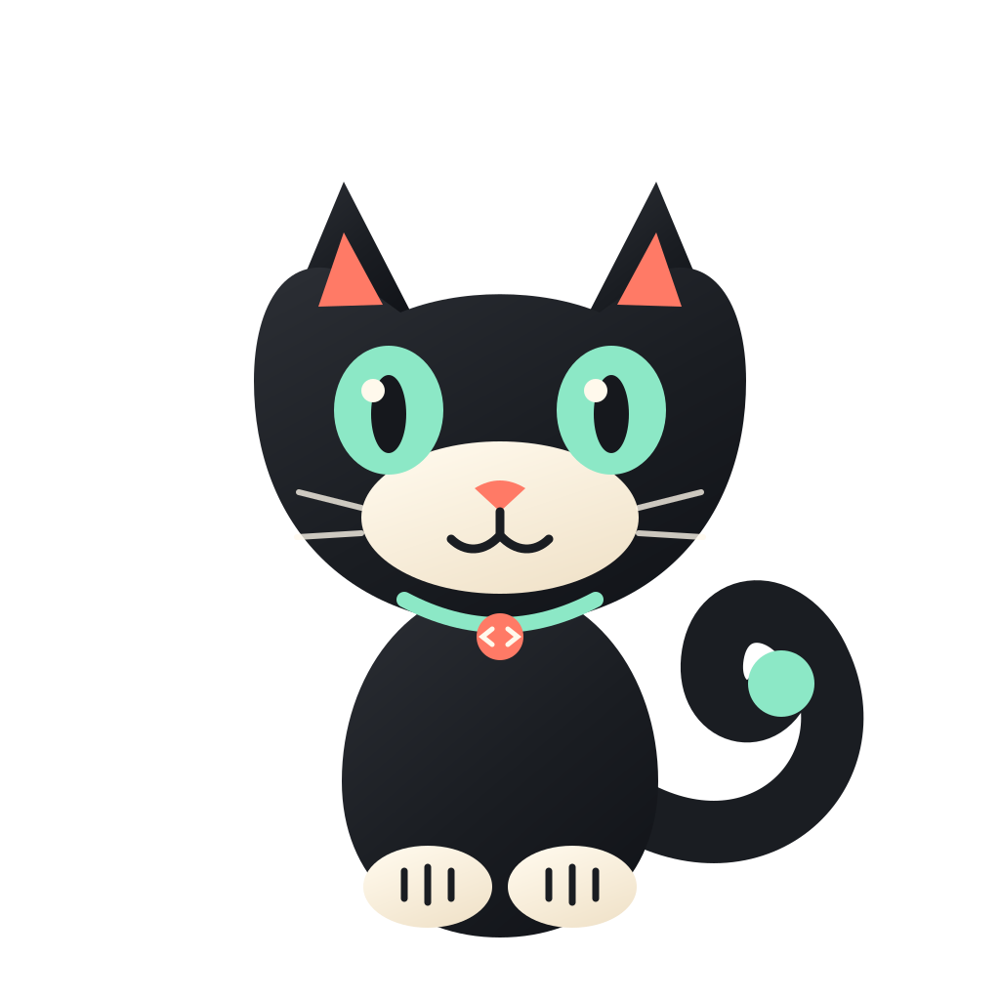
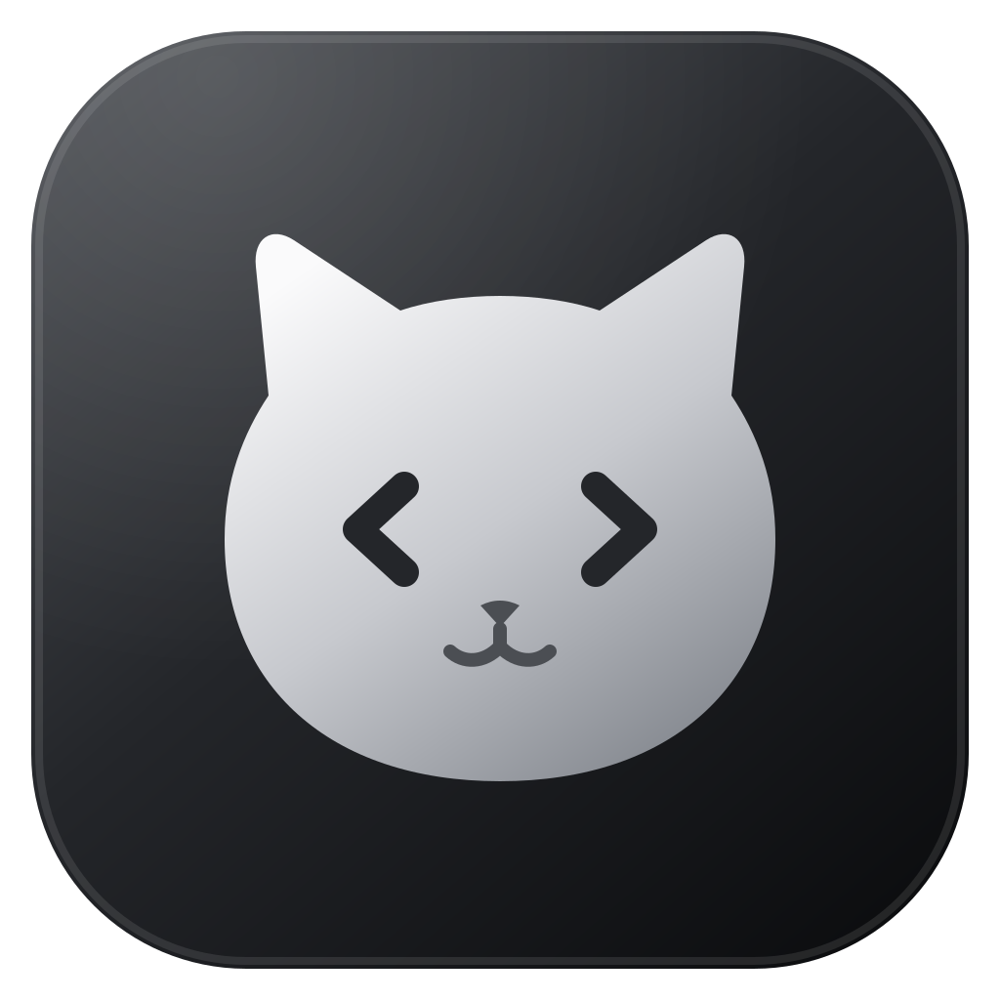
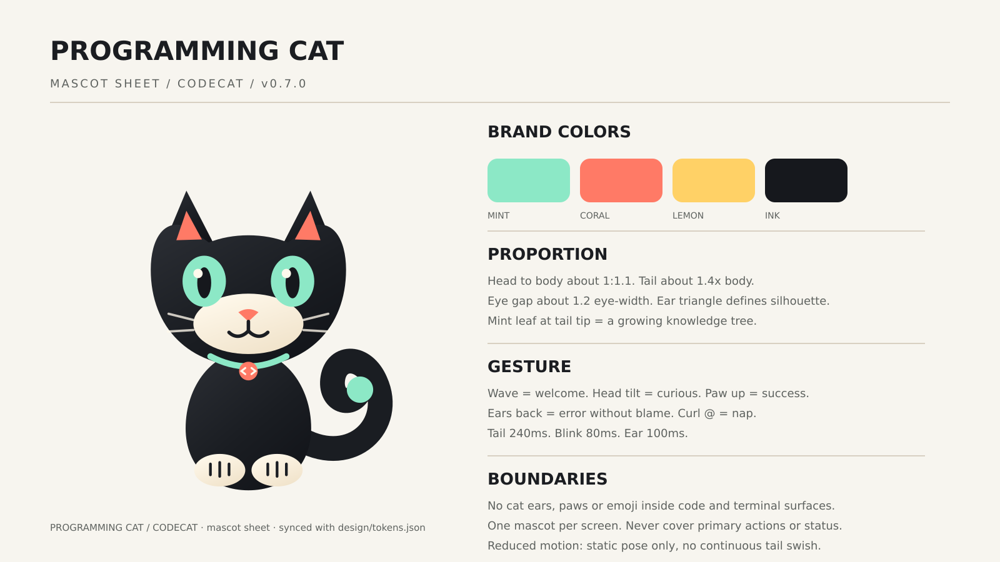

Curious / Agile
薄荷 / 代码眼
#8CE8C6珊瑚 / 耳内与鼻
#FF7A66墨黑 / 猫身
#16181D
编程猫CODECAT · VISUAL SYSTEM v0.7.0以暖纸、墨黑、薄荷与珊瑚建立好奇、清晰的学习空间。主题猫「小码」与代码括号形成品牌记忆，云图扩散把复杂知识关系变成可定位、可返回的探索路径。
好奇、敏捷、敢试错。墨黑猫身、薄荷代码眼、珊瑚耳内与知识枝尾巴，构成可识别、可延展的角色母版。

#8CE8C6#FF7A66#16181D用于设计评审与宣传交底。母版与设定板同源；应用内单页最多一只猫，不进入代码区和终端。

猫耳负责识别，薄荷与珊瑚负责性格，代码括号眼睛负责表达编程属性。渐变只服务品牌，不蔓延到按钮、正文和终端。主图、前景与单色层共享同一轮廓。
#2B3036#171A1E#0B0C0E3 stops优先保留猫耳、脸颊和括号眼睛；鼻口在小尺寸自然弱化。
以当前节点为中心，按图距离分层展开。稳定排序保留位置记忆，聚合节点控制密度；动效只说明“从哪里展开”，不让整张图持续漂浮。
中性色建立层级，功能色只在焦点和状态出现。展示、正文与代码字体各司其职；所有间距、圆角和动效来自同一份设计令牌。
#F7F5EF#FFFFFF#1D1D1F#2563EB正文使用 17sp 与 1.6 倍行高，中文行长保持舒适。标题建立明确层级，代码使用等宽字体并允许横向查看。
def greet(name: str) -> str:
return f"你好，{name}"每项变化记录任务、范围、前后差异、影响、验证和回退。设计目标与实测结果分开陈述，源文件与派生物在同一变更中同步。
确认版本、任务 ID、已有改动和权威来源。
先契约与令牌，再页面和资产生成。
图标三版本与 PNG、合集和压缩包保持同步。
结构、对比度、小尺寸、云图稳定性与减少动效。
检查未声明变化，记录真实命令与关键输出。
限制、剩余事项和整组恢复方式可追踪。